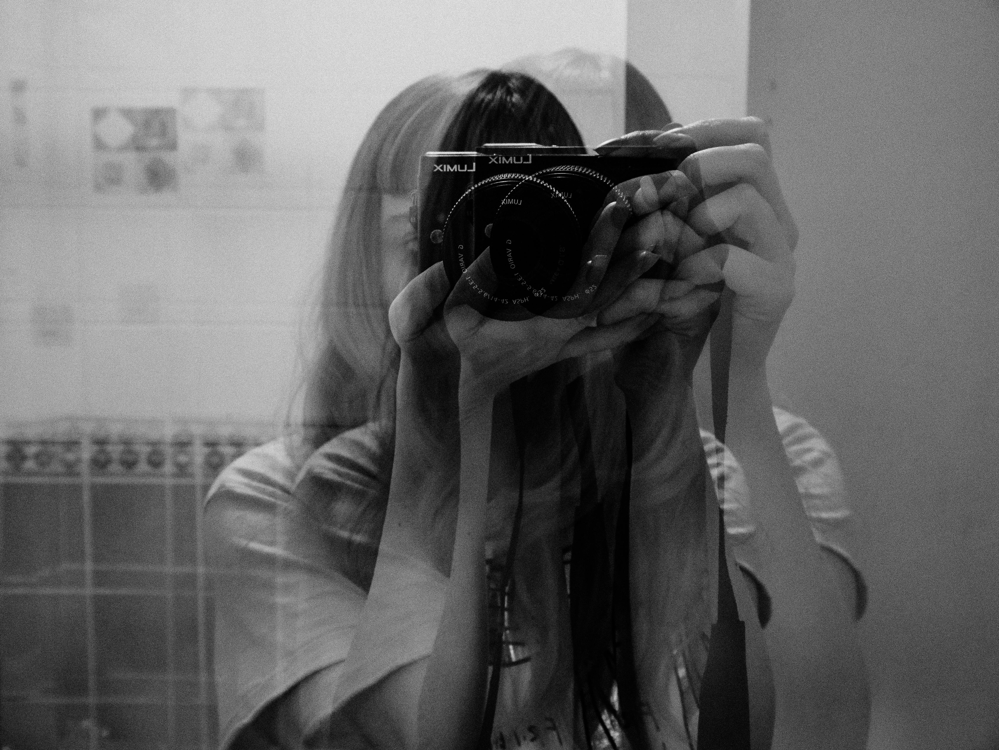

Bridging Clinical Speech Science and Technology
With a background in speech-language pathology, Kaci brings a user-centered perspective to digital product design, specializing in UI, UX, and accessibility consulting that improves usability and inclusivity for diverse audiences.
She has completed certified trainings in UX/UI design and UX writing, integrating evidence-based accessibility knowledge and current industry research to build user-focused solutions that meet modern design standards and deliver measurable improvements in usability and engagement.
She contributes to Thunderbird open-source accessibility projects, including cross-collaboration with the UX design team, and participates in Thunderbird's Accessibility Standards and Compliance Committee.
